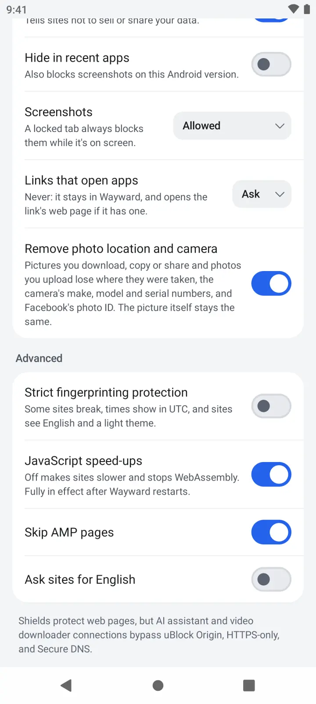

When pages are slow or scrolling stutters
How-to
If pages load slowly or scrolling feels uneven, a few things in Wayward, and on your phone, make a difference.
Keep Wayward up to date
Updates bring speed fixes along with everything else. See How does Wayward update?
Check JavaScript speed-ups
Settings > Shields & Privacy, under Advanced: JavaScript speed-ups should be on, by default. Off, sites run slower (in exchange for less that an attack could use). The change takes full effect after Wayward restarts.

Go easier on the filter lists
Every filter list is more for Wayward to check on each page. If you picked Maximum under Ad blocking, or turned on many lists in Filter lists, try Standard and see whether pages feel quicker. Standard still blocks ads, trackers, malware and cookie notices.
Don't clear the cache to speed things up
Cached images and files in Clear browsing data are parts of pages saved on your phone so they load faster next time. Clearing them makes pages slower until they're saved again. Clear them to free space or fix a page that won't update, not for speed.
Close what you don't need
- Downloads share your connection: with several running at once, pages load slower. Settings > Downloads > Downloads at once sets how many run together.
- Video playing in the background, and tabs that stay loaded, use your phone's memory and battery. Close tabs you're done with from the Tabs screen. See how Wayward saves memory below.
How Wayward saves memory
Wayward does these by itself, so there's nothing to set:
- When you go to another app, it closes the pages of your background tabs, apart from pinned tabs and a few others, and it closes some when memory runs low. A page loads again when you open its tab, with your place on it. See pages that stay loaded.
- On Android 14 and later, when your phone is low on memory as you switch tabs, it keeps fewer pages loaded for a minute.
- Its video downloader starts only when a video download or a check of a video's qualities needs it, not every time Wayward opens. So the first one after Wayward starts takes a moment longer.
- uBlock Origin waits until you've used Wayward for a few minutes before it updates its filter lists.
- Standard ad blocking leaves out the big URLhaus malware list. Strict and Maximum add it, and use more memory. See choose how much Wayward blocks.
Restart Wayward
Swipe Wayward away in your phone's recent apps and open it again. (If Delete everything when Wayward closes is on in Settings > Tabs and History, this deletes your tabs and browsing data, as that switch says.)
On your phone
- Battery saver modes slow apps down to save power.
- When your phone is nearly full, everything gets slower. Free some space: Wayward's downloads show how much space they use at the top of Downloads.
One site only?
Some big sites, like endless feeds, stall while they fetch more posts; that's the site, not your phone. If one site is slow every time, try turning off Protection on this site in its shield sheet to see whether it's waiting on something Wayward blocked.
Still slow?
Tell us with Settings > Send feedback, Something isn't working and Browsing, and say what you were doing and what you tried. See Send feedback or report a problem.